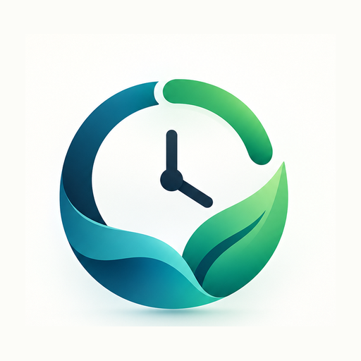
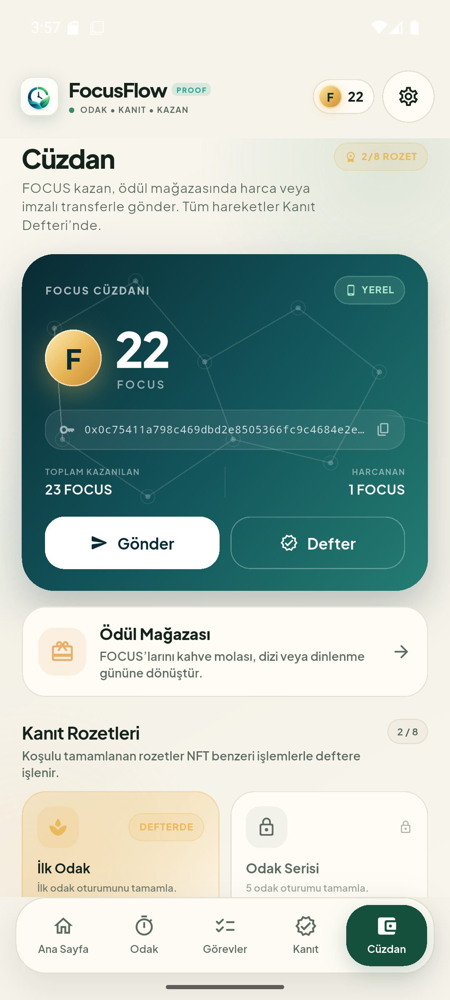
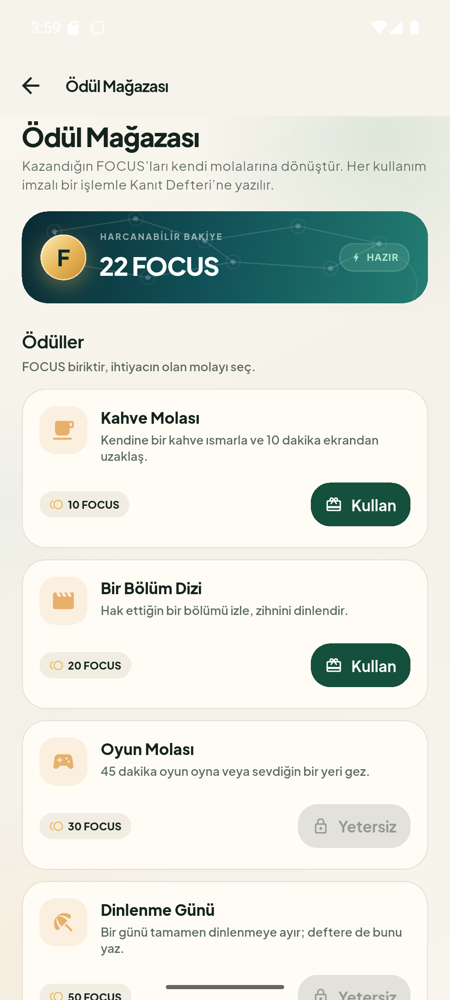
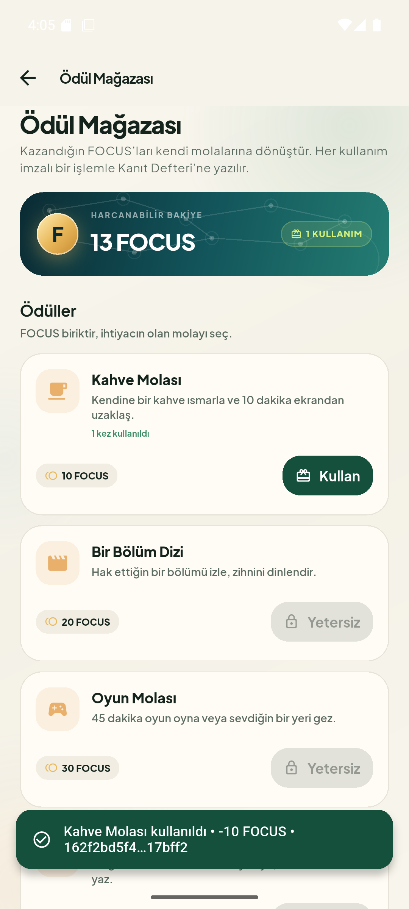

Odak oturumlarını ve görevleri yerel, kriptografik bir kanıt defterine yazan; kazanılan FOCUS’u harcanabilir bir motivasyon birimine dönüştüren Android uygulaması.
Bu rapor; uygulamanın ne yaptığını, Dart ile hangi katmanların kurulduğunu, Effective Dart ilkelerinin kodda nasıl karşılık bulduğunu ve yerel kanıt defterinin neden dekoratif değil, ürünün yazma yolunun merkezinde olduğunu açıklar.
Ürünün amacı, kapsamı, öne çıkan sonuçları ve ölçülebilir proje verileri.
Beş sekme, Pomodoro davranışı, görev yönetimi, istatistik ve kullanıcı yolculuğu.
Katmanlı mimari, durum yönetimi, yerel depolama, zamanlayıcı ve test edilebilirlik.
Stil, dokümantasyon, kullanım ve tasarım başlıklarında somut dosya kanıtları.
Hash zinciri, Merkle kökü, proof-of-work, Ed25519 imzalar ve doğrulama.
Cüzdanın amacı, dört yerel ödül, yakma adresi ve örnek bakiye akışı.
36 test, statik analiz, APK, emülatör senaryoları ve bilinçli sınırlar.
Projenin teknik kazanımları, ürün bütünlüğü ve sonraki adımlar.
Kritik dosyalar, token formülleri, adres kuralları ve kısa sözlük.
flutter analyze: 0 sorun · flutter test: 36/36 başarılı.
Rapor, 24 Ekim 2026 tarihli çalışma ağacındaki 2.0.0+2 sürümü ve Android API 36 emülatör doğrulamaları üzerinden hazırlanmıştır. Ekran görüntüleri uygulamanın gerçek çalışan arayüzünden alınmıştır.
FocusFlow Proof, Pomodoro tekniğiyle odaklanmayı kolaylaştıran; tamamlanan oturumları, görevleri ve kazanılan rozetleri cihazda çalışan bir kanıt defterine kaydeden Türkçe bir Android uygulamasıdır. Ürünün ayırt edici yönü, üretkenlik verisini yalnızca saklaması değil, sonradan değiştirilip değiştirilmediğinin anlaşılabilmesidir.
| Ürün adı | FocusFlow Proof |
| Sürüm | 2.0.0+2 |
| Platform | Android; mobil öncelikli. Web ve masaüstü markalaması kapsam dışı. |
| Dil ve çatı | Dart 3.9.2, Flutter 3.35.4, Material 3 |
| Mimari | UI / durum / iş mantığı / depolama ayrımı; constructor tabanlı bağımlılık enjeksiyonu |
| Yerel depolama | shared_preferences üzerinde JSON kayıtları |
| Ağ bağımlılığı | Yok. Sunucu, hesap, API, bulut veya P2P ağ yok; Android manifestinde internet izni istenmez. |
| Para birimi | FOCUS; yalnızca uygulama içi motivasyon birimi, gerçek para değeri yok. |
Uygulama, klasik bir Pomodoro deneyimini üç katmanlı bir değer önerisiyle birleştirir. Birinci katman odaktır: 25 dakikalık odak, 5 dakikalık kısa mola ve 15 dakikalık uzun mola varsayılanlarıyla çalışan, uygulama arka plana alınsa bile hedef bitiş zamanından hesaplanan bir sayaç. İkinci katman görev ve istatistiktir: görevler eklenir, düzenlenir, tamamlanır; günlük ve son yedi güne ait değerler sabit demo verisinden değil, gerçek kayıtlardan üretilir. Üçüncü katman kanıt ve ödüldür: her odak oturumu, görev ve rozet yerel defterde işlem olarak durur; kazanılan FOCUS, Ödül Mağazası’nda kahve molası, dizi, oyun veya dinlenme gününe dönüştürülebilir.
Kanıt Defteri; SHA-256 hash zinciri, Merkle kökü, proof-of-work madenciliği, Ed25519 imzaları ve bakiye doğrulamasını birleştirir. Bu yapı dekoratif bir “blockchain” görünümü değildir: odak ve görev ödülleri doğrudan bu yazma yolundan geçer. Kurcalama demosu, son bloktaki bir işlem bellekte değiştirildiğinde doğrulayıcının hash, imza ve bakiye zincirini nasıl kırdığını gösterir; cüzdan ise bu sırada sağlam defter kopyasından okunmaya devam eder.
Proje 51 Dart kaynak dosyası ve yaklaşık 13,6 bin satır uygulama kodundan oluşur. Sekiz test dosyasındaki 36 test; sayaç yaşam döngüsünden blok doğrulamaya, JSON dayanıklılığından 360×800 dar ekran taşma kontrolüne kadar geniş bir alanı kapsar. flutter analyze sıfır sorun bildirir; hata ayıklama APK’sı üretilmiş ve API 36 emülatöründe çalıştırılmıştır.
| Kapsam içinde | Kapsam dışında |
|---|---|
| Yerel Pomodoro sayacı, görev yönetimi, günlük istatistikler | Hesap, bulut senkronizasyonu, çok kullanıcılı sunucu |
| Yerel kanıt defteri, blok/işlem gezgini, doğrulama ve kurcalama demosu | Gerçek P2P ağ, dağıtık fikir birliği, harici blok zinciri |
| FOCUS cüzdanı, Ed25519 transfer, rozetler ve Ödül Mağazası | Gerçek para, borsa, spekülatif token ekonomisi |
| Türkçe arayüz, açık/koyu tema, Android markalaması ve testler | Web/masaüstü sürümü, push bildirimi, arka plan alarmı |
Uygulamanın ana fikri, kullanıcıyı ayrı ayrı özelliklerle yormak yerine tek bir döngüde tutmaktır: odaklan, görevi tamamla, kanıt üret, FOCUS kazan ve bunu kendi ödülüne dönüştür. Beş sekme bu döngünün farklı yüzlerini gösterir.
| Sekme | Kullanıcıya sunduğu değer | Teknik karşılığı |
|---|---|---|
| Ana Sayfa | Günlük odak süresi, tamamlanan/bekleyen görevler, FOCUS bakiyesi, son blok ve defter sağlığı. | HomeScreen, _ProofSummaryCard, gerçek zamanlı AppController verileri. |
| Odak | Odak, kısa mola ve uzun mola modları; başlat, duraklat, devam et, sıfırla. | FocusTimerController, hedef bitiş zamanı, WidgetsBindingObserver. |
| Görevler | Görev ekleme, düzenleme, tamamlama, silme; Tümü / Bekleyenler / Tamamlananlar filtreleri. | StudyTask, TaskRepository, doğrulama ve JSON serileştirme. |
| Kanıt | Blok ve işlem gezgini, PoW ve Merkle bilgisi, defter doğrulama, kurcalama demosu. | ChainScreen, ChainValidator, FocusChainService. |
| Cüzdan | FOCUS bakiyesi, kazanılan/harcanan toplam, imzalı transfer, rozetler ve Ödül Mağazası girişi. | WalletScreen, WalletService, RewardsPage. |
İstatistikler ve ayarlar alt gezinmede ayrı bir sekme kaplamaz; ilgili ekranlardan itilen sayfalar olarak açılır. Böylece beş ana sekme yalnızca günlük kullanım döngüsüne ayrılır.
Yerel cüzdan oluşturulur; genesis bloğu ve 10 FOCUS hoş geldin ödülü deftere yazılır.
Kullanıcı 25 dakikalık odak modunu başlatır. Kalan süre her saniye hedef bitiş zamanından yeniden hesaplanır.
Oturum bir kez kaydedilir; her tam 5 dakika için 1 FOCUS kazanılır. 25 dakikalık oturum 5 FOCUS üretir.
Ödül işlemi mempool’a girer, proof-of-work ile bloklaşır. Hak edilen rozetler ayrı işlemlerle basılır.
Tamamlanan görev 2 FOCUS üretir; odağa bağlı rozet koşulları yeniden değerlendirilir.
Cüzdanda FOCUS, Ödül Mağazası’nda bir molaya dönüşür. Harcama imzalı işlemle yakma adresine gider ve defterde kalır.
FocusTimerController her saniye yalnızca remainingSeconds-- yapmaz. Başlatma ve devam etme sırasında bir hedef bitiş zamanı oluşturur; kalan süreyi target.difference(clock()) ile hesaplar. Uygulama arka plana alınıp geri döndüğünde syncNow() çağrılır. Bu tasarım, kare atlaması veya işletim sistemi gecikmesi nedeniyle sayacın sapmasını engeller.
| Kaynak | Kazanç | Açıklama |
|---|---|---|
| Genesis / hoş geldin | 10 FOCUS | İlk cüzdanla birlikte genesis bloğunda üretilir. |
| Tamamlanan odak oturumu | Her 5 dakika için 1 FOCUS | 5 dakikadan kısa pozitif oturumda en az 1 FOCUS; 25 dakikada 5 FOCUS. |
| Tamamlanan görev | 2 FOCUS | Görev başına bir kez; aynı görev için ikinci ödül üretilmez. |
| Blok üretimi | 1 FOCUS | Her başarılı madencilikte madenciye coinbase ödülü. |
| Rozet basımı | 3–25 FOCUS | Sekiz rozetin koşuluna göre değişir; toplam potansiyel 103 FOCUS. |
| Transfer | 0 ek ücret | Ed25519 imzalı; yalnızca geçerli 0x adreslerine. |
Örnek: 25 dakikalık bir odak oturumu 5 FOCUS odak ödülü ve 1 FOCUS blok ödülü üretir. Aynı işlem sırasında yeni bir rozet hak edilirse rozet ödülü ve rozet bloğunun coinbase ödülü de bakiyeye eklenir.
Uygulamanın tamamı Dart ile yazıldı: ekranlar, durum yönetimi, iş kuralları, yerel depolama, kriptografi, testler ve Android yapılandırması. Amaç yalnızca “Dart kullanmak” değil; her katmanı test edilebilir ve birbirinden ayrılabilir tutmaktı.
Bağımlılıklar constructor üzerinden verilir. main.dart, SharedPreferences örneğini bir kez oluşturur; repository’ler ve FocusChainService aynı depolama katmanını paylaşır. Testler ise SharedPreferences.setMockInitialValues ile aynı nesneleri bellek içi depoya bağlar. Bu, “test için ayrı uygulama” yazmadan gerçek kodun test edilmesini sağlar.
| Problem | Dart çözümü | Ana dosya |
|---|---|---|
| Sayaç sapması ve çift kayıt | Hedef bitiş zamanı, Timer.periodic, _completionHandled ve dispose. | features/focus/focus_timer_controller.dart |
| Görev doğrulama ve kalıcılık | Değişmez model, copyWith, JSON doğrulama, repository ve hata toleranslı yükleme. | models/study_task.dart, data/task_repository.dart |
| Gerçek istatistik üretimi | UI’dan bağımsız saf hesaplayıcı; tamamlanmış odak oturumlarını filtreleme, günlük ve yedi günlük toplamlar. | features/statistics/statistics_calculator.dart |
| Merkezi durum ve ekran geçişi | ChangeNotifier, IndexedStack, tek AppController ve beş sekmeli kabuk. | state/app_controller.dart, app.dart |
| Kanıt defteri | İşlem oluşturma, mempool, blok madenciliği, doğrulama, kurcalama ve kalıcılık. | blockchain/state/focus_chain_service.dart |
| FOCUS harcama | İmzalı rewardRedemption işlemi, yakma adresi, bakiye kontrolü ve kullanım geçmişi. | features/rewards/rewards_page.dart |
| Marka ve responsive görünüm | Material 3 teması, Plus Jakarta Sans, özel renk paleti, logo/splash ve 360×800 taşma testi. | core/theme/app_theme.dart, app.dart |
Pomodoro uygulamalarında en sık görülen hata, sayacı her saniye bir azaltıp uygulama arka plana alındığında süreyi kaybetmektir. Bu projede sayaç, hedef zaman ile gerçek zaman arasındaki farkı kullanır:
final remainingMilliseconds = target.difference(_clock()).inMilliseconds;
var nextRemaining = remainingMilliseconds <= 0
? 0
: (remainingMilliseconds + 999) ~/ 1000;FocusTimerController — kalan süre, hedef bitiş zamanından hesaplanır.
Süre sıfıra indiğinde _completeSession() çalışır. _completionHandled bayrağı, aynı oturumun iki kez kaydedilmesini engeller. Sayaç durdurulur, hedef temizlenir ve oturum onSessionCompleted geri çağrısıyla dışarı aktarılır. dispose() içinde de timer iptal edilir.
Uygulamanın durumu tek bir merkezi denetleyici ve iki alt servis tarafından yönetilecek kadar derli topludur. Flutter’ın ChangeNotifier ve ListenableBuilder yapıları yeterli olduğu için BLoC, Riverpod veya Provider gibi ek bir bağımlılık eklenmedi. Bu, öğrenci projesinde durum akışını görünür ve test edilebilir tutar.
TaskRepository, FocusSessionRepository, SettingsRepository, FocusChainRepository ve WalletRepository, depolama ayrıntısını gizler. UI ve iş mantığı SharedPreferences anahtarlarını bilmez; bozuk JSON karşısında güvenli davranır.
Ekran kodu değiştiğinde kriptografi, depolama veya istatistik testleri bozulmaz; tersine, doğrulayıcı değiştiğinde UI kodu değişmek zorunda kalmaz. Bu ayrım, projenin hem okunabilir hem de genişletilebilir kalmasının temel nedenidir.
Effective Dart yalnızca “lint kurallarını geçmek” değildir; okunabilir, tutarlı, null güvenli ve test edilebilir kod üretmektir. Projede dört başlıkta somut karşılıklar vardır: stil, dokümantasyon, kullanım ve tasarım.
| Başlık | Uygulama | Kanıt |
|---|---|---|
| Stil | Sınıf/enum UpperCamelCase, üye lowerCamelCase, dosya snake_case; final/const yaygın; dart format temiz. | 51 dosya, tek biçim; const tema renkleri ve model constructor’ları. |
| Dokümantasyon | Public sınıf ve metotlarda ///; davranış, yan etki ve değişmezler açıklanır. | FocusTimerController, FocusChain, ChainValidator, RewardOffer. |
| Kullanım | Null safety, pattern kontrolleri, enum + switch, extension, async/await, koleksiyon kısayolları, kaynak dispose. | ChainTransaction.fromJson, ChainTransactionTypeDetails, FocusTimerController.dispose. |
| Tasarım | Katmanlı mimari, constructor injection, değişmez modeller, saf hesaplayıcılar, repository soyutlaması, testler. | AppController, StatisticsCalculator, TaskRepository, test/. |
Ödül kataloğu ve rozetler, sabit listelerde dağınık string’ler yerine alan taşıyan gelişmiş enum’lardır. RewardOffer başlık, açıklama, maliyet ve ikon adını taşır; AchievementId ayrıca ödül ve NFT kimliği üretir. Bu, katalog ile UI arasındaki sözleşmeyi tip güvenli hale getirir.
enum RewardOffer {
coffeeBreak(
title: 'Kahve Molası',
description: 'Kendine bir kahve ısmarla ve 10 dakika ekrandan uzaklaş.',
cost: 10,
iconName: 'local_cafe',
),
// ...
}İşlem türlerinin kullanıcıya görünen adı, sistem mi yoksa harcama mı olduğu tek bir extension’da toplanır. switch ifadesi enum’un tüm değerlerini kapsar; yeni bir tür eklendiğinde derleyici eksik dalı fark etmeye yardım eder.
extension ChainTransactionTypeDetails on ChainTransactionType {
String get label => switch (this) {
ChainTransactionType.genesis => 'Hoş geldin ödülü',
ChainTransactionType.focusReward => 'Odak ödülü',
// ...
ChainTransactionType.rewardRedemption => 'Ödül kullanımı',
};
}JSON’dan gelen alanlar Object? olarak okunur; is! kontrolleriyle daraltılır. İşlem imzası ve gönderici açık anahtarı yalnızca kullanıcı transferlerinde vardır; bu yüzden String? olarak modellenir. Eksik imza doğrulayıcıda açık bir hata mesajına dönüşür; null bir değer sessizce kullanılmaz.
final id = json['id'];
final amount = json['amount'];
if (id is! String || id.trim().isEmpty) {
throw const FormatException('İşlem kimliği geçersiz.');
}
if (amount is! int || amount <= 0) {
throw const FormatException('İşlem miktarı geçersiz.');
}ChainTransaction.create işlem gövdesini kanonik JSON’a çevirip SHA-256 kimliğini üretir; ChainTransaction.fromJson ise gelen kimliğin gövdeyle uyuşup uyuşmadığını kontrol eder. Nesne oluşturulduğunda kimlik ile içerik arasındaki ilişki zaten kurulmuştur.
MerkleTree, FocusRewardCalculator, StatisticsCalculator ve CanonicalJson gibi yalnızca statik yardımcılar içeren sınıflar abstract final class olarak tanımlanır. Böylece yanlışlıkla örneklenmeleri veya kalıtılmaları engellenir.
FocusChain blok ve bekleyen işlem listelerini List.unmodifiable olarak tutar; her yazma yeni bir defter anlık görüntüsü üretir. StudyTask copyWith ile güncellenir; isteğe bağlı alanları null’a çekebilmek için özel bir _absent sentinel’i kullanılır. Bu, UI’ın elindeki listeyi yanlışlıkla değiştirip durumu bozmasını engeller.
FocusTimerController.dispose() timer’ı iptal eder; AnimatedBuilder ve TextEditingController kullanan widget’larda da dinleyiciler serbest bırakılır. WidgetsBindingObserver ile uygulama ön plana döndüğünde syncNow() çağrılır; arka planda kalan süre kaybolmaz.
Servisler repository alır, sayaç saat fonksiyonu alır, saf hesaplayıcılar yalnızca veriyle çalışır. Bu sayede 36 test; gerçek cihaz, ağ veya zaman beklemeye ihtiyaç duymadan çalışır. Test dosyaları test/ altında üretim kodundan ayrı tutulur.
| Kontrol | Sonuç | Açıklama |
|---|---|---|
| dart format lib test | Temiz | Tüm Dart dosyaları standart biçimde; elle hizalama yok. |
| flutter analyze | 0 sorun | flutter_lints etkin; uyarı veya hata yok. |
| flutter test | 36/36 | Birim, widget ve dar ekran smoke testleri başarılı. |
JSON sınırında Map<String, dynamic> kullanılır; çünkü jsonDecode dinamik bir yapı döndürür. Değerler hemen tip kontrollerinden geçirilir ve alan modeline aktarılır. Özel anahtar shared_preferences içinde saklanır; bu demo için pratiktir ancak üretim ortamında donanım destekli güvenli depolama (ör. Android Keystore) kullanılmalıdır. Bu sınırlar raporda açıkça belirtilmiştir.
Kanıt Defteri, uygulamanın süsü değil yazma yoludur. Odak oturumu, görev, rozet, transfer ve ödül kullanımı; işlem üretme, mempool, proof-of-work madenciliği, kalıcılık ve doğrulama aşamalarından geçer. Yapı tek düğümlü ve yereldir; gerçek bir P2P ağ veya dağıtık mutabakat iddiası yoktur. Amaç, blok zinciri tekniklerini çalışan bir üründe göstermektir.
Genesis hoş geldin ödülü; odak ve görev ödülleri; rozet basımı; blok coinbase ödülü; imzalı transfer; ödül kullanımı ve kanıt gezgini aynı defter servisinin farklı giriş noktalarıdır.
Odak oturumu tamamlanır, görev işaretlenir, rozet hak edilir, transfer veya ödül kullanımı başlatılır.
ChainTransaction.create; tür, adresler, miktar, zaman ve metadata’yı kanonik JSON’a çevirir.
Kanonik gövdenin SHA-256 özeti işlem kimliği olur. Aynı içerik her platformda aynı kimliği üretir.
Transfer ve ödül kullanımı, cüzdanın Ed25519 özel anahtarıyla imzalanır; açık anahtar işleme eklenir.
İşlem bekleyenler kuyruğuna alınır; önce kalıcı depoya yazılır, ancak başarılıysa bellekteki defter güncellenir.
Merkle kökü, önceki hash, nonce ve zorluk ile blok hash’i aranır; hash “000” ile başlayınca blok üretilir.
Yeni defter doğrulayıcıdan geçirilir; hash, PoW, Merkle, imza ve bakiye kontrolleri başarılıysa saklanır.
| Model | Alanlar ve rol |
|---|---|
| ChainTransaction | id, type, fromAddress, toAddress, amount, timestamp, metadata, signature?, senderPublicKey?. Kimlik, gövdenin kanonik JSON özetidir. |
| ChainBlock | index, timestamp, transactions, previousHash, hash, nonce, difficulty, minerAddress. Merkle kökü işlemlerden türetilir. |
| FocusChain | Bloklar, bekleyen işlemler, cüzdan adresi ve zorluk. Tüm listeler salt okunur; her değişiklik yeni bir anlık görüntü üretir. |
| WalletAccount | Adres, base64 açık anahtar ve base64 özel anahtar. Adres; açık anahtarın SHA-256 özetinin ilk 20 baytından türetilir. |
| Bileşen | Ne yapıyor? | Nerede? |
|---|---|---|
| SHA-256 | İşlem kimliği, blok hash’i ve kanonik JSON özeti üretir. | canonical_json.dart, chain_transaction.dart, chain_block.dart |
| Kanonik JSON | Harita anahtarlarını sıralar; aynı içeriğin platformdan bağımsız aynı baytları üretmesini sağlar. | blockchain/utils/canonical_json.dart |
| Merkle ağacı | İşlem kimliklerini ikili eşleştirip tek bir kök hash’e indirger; blok başlığını sabit boyutta tutar. | blockchain/utils/merkle_tree.dart |
| Proof-of-work | Blok hash’inin başında zorluk kadar sıfır aranır. Varsayılan zorluk 3’tür; hedef 000 ile başlar. | ChainBlock.mine, FocusChainNetwork.difficultyTarget |
| Ed25519 | Cüzdan anahtar çifti; transfer ve ödül kullanımı imzası; açık anahtarla doğrulama. | wallet_service.dart, chain_validator.dart |
| Hash bağlantısı | Her blok previousHash ile öncekine bağlanır; sonradan değişen bir işlem tüm sonraki bağlantıları geçersiz kılar. | FocusChain.minePendingTransactions |
static String _calculateHash({
required int index,
required int timestamp,
required String previousHash,
required String merkleRoot,
required int nonce,
required int difficulty,
required String minerAddress,
}) {
final payload = <String, Object?>{
'index': index,
'timestamp': timestamp,
'previousHash': previousHash,
'merkleRoot': merkleRoot,
'nonce': nonce,
'difficulty': difficulty,
'minerAddress': minerAddress,
};
return sha256Hex(canonicalJsonEncode(payload));
}ChainBlock — blok hash’i, başlığın kanonik JSON özetidir; işlem listesi Merkle kökü üzerinden temsil edilir.
| Kontrol | Yakalanan hata |
|---|---|
| Genesis indeksi ve önceki hash | Defterin sıfır indeksli, doğru başlangıç hash’li genesis ile başlamaması. |
| Blok sırası | Eksik veya yinelenen indeks; zincirin kopması. |
| previousHash bağlantısı | Bir bloğun önceki blokla bağlantılı olmaması. |
| Blok hash’i | İçerik değiştiği halde hash’in yeniden hesaplanmaması. |
| Proof-of-work hedefi | Hash’in zorluk kadar sıfırla başlamaması. |
| Merkle kökü | İşlem listesinin blok başlığındaki kökle uyuşmaması. |
| İşlem kimliği | Aynı kimliğin birden fazla kez kullanılması veya gövdenin kimlikle uyuşmaması. |
| Ed25519 imzası | Harcama işleminde imzanın eksik, geçersiz veya yanlış anahtara ait olması. |
| Adres ve bakiye | Geçersiz adres, kendi adresine transfer, yetersiz bakiye. |
| Rozet ve ödül metadata’sı | Aynı rozetin iki kez basılması; ödül kullanımında rewardId eksikliği. |
Kanıt ekranındaki “Defteri kurcala” işlemi, kalıcı veriye dokunmadan son bloğun ilk ödül işleminin miktarını değiştirir. İşlem kimliği yeniden hesaplanır ancak eski imza ve blok hash’i korunur. Doğrulayıcı önce hash uyuşmazlığını yakalar; dolayısıyla hem işlem bütünlüğü hem de blok bütünlüğü bozulur. Cüzdan bakiyesi bu sırada _chainBackup üzerinden sağlam defterden okunur, yazma işlemleri kilitlenir. “Sağlam deftere dön” ile yedek geri yüklenir ve doğrulama yeniden yeşile döner.
Bir yarışma demosunda “blockchain var” demek yeterli değildir; işlem üretimi, madencilik, imza, doğrulama ve kurcalama tespitinin aynı akışta görünmesi gerekir. Bu proje, yerel ve küçük ölçekli olsa da blok zinciri fikirlerinin tamamını çalışan kodda gösterir.
FOCUS kazanmak tek başına bir amaç değildir. Cüzdanın anlamlı olması için kazanılan birimin harcanabileceği bir yer gerekir. Ödül Mağazası bu boşluğu doldurur: kullanıcı kendi emeğiyle kazandığı FOCUS’u kahve molası, dizi, oyun veya dinlenme gününe dönüştürür.
Kendine bir kahve ısmarla ve 10 dakika ekrandan uzaklaş.
Hak ettiğin bir bölümü izle, zihnini dinlendir.
45 dakika oyun oyna veya sevdiğin bir yeri gez.
Bir günü tamamen dinlenmeye ayır; deftere de bunu yaz.
Kullanıcı bakiyesi yeterli olan bir ödülün “Kullan” düğmesine dokunur; yetersizse düğme kilitli görünür.
Maliyet ve işlemin cihazdaki Ed25519 anahtarıyla imzalanacağı açıkça belirtilir; bunun gerçek para olmadığı vurgulanır.
Defter kurcalanmışsa işlem engellenir. Geçerliyse rewardRedemption işlemi üretilir.
İşlem, FOCUSFLOW_BURN adresine gönderilir. Bu adres kullanıcı adresi değildir; doğrulayıcı yalnızca ödül kullanımında özel olarak kabul eder.
İşlem mempool’a girer, proof-of-work bloğuna yazılır. Madenci 1 FOCUS blok ödülü kazanır.
Kullanım sayısı ve işlem kısa hash’i anlık bildirimde; tüm kayıt “Kullanılan ödüller” listesinde görünür.
Cüzdanda 22 FOCUS varken 10 FOCUS’luk Kahve Molası kullanıldığında bakiye önce 12’ye düşer; aynı işlemde üretilen blokun 1 FOCUS coinbase ödülüyle 13 FOCUS olur. Ekranda “1 kullanım” ve işlem hash’i görünür. Net değişim -10 + 1 = -9 FOCUS’tur.



Görüntüler Android API 36 emülatöründe, uygulamanın gerçek verisiyle alınmıştır. Üçüncü görüntüdeki 22 → 13 düşüşü, 10 FOCUS maliyet ve 1 FOCUS blok ödülüyle açıklanır.
Ödül Mağazası öncesinde FOCUS yalnızca birikiyor ve “ne işe yarıyor?” sorusunu tam yanıtlamıyordu. Artık cüzdan üç işlevi birlikte gösterir: kazan (odak, görev, rozet, blok), harca (dört yerel ödül) ve kanıtla (imzalı transfer, yakma işlemi, işlem geçmişi). Cüzdan ekranındaki HARCANAN metriği, harcamaların transferlerle birlikte toplamını gösterir.
Kullanıcı geçerli bir 0x adresine FOCUS gönderebilir. İşlem, cüzdanın Ed25519 özel anahtarıyla imzalanır; alıcı adresi, bakiye ve bekleyen giden işlemler kontrol edilir. Transfer ücreti yoktur.
Ödül kullanımı, FOCUS’u FOCUSFLOW_BURN adresine gönderir. Bu, arzı azaltan ve harcamayı kalıcı bir kanıta dönüştüren yerel bir muhasebe kuralıdır; gerçek bir dış ağa bağlanmaz.
FOCUS, uygulama içi motivasyon birimidir; alınıp satılamaz, gerçek para değeri yoktur ve cüzdanlar arası transfer yalnızca demo amaçlıdır. Ödüller de yerel öz-ödüllerdir: uygulama “kahve al” demez, kullanıcının kendine mola vermesini kayıt altına alır.
Raporun bu bölümü yalnızca başarıları değil, doğrulama yöntemini ve ürünün bilinçli sınırlarını da kayda geçirir. Amaç, sonuçların tekrarlanabilir olması ve gelecekteki geliştirmelerin nereden başlayacağının açık olmasıdır.
| Komut / ortam | Sonuç | Not |
|---|---|---|
| dart format lib test | Temiz | Biçimlendirme değişikliği gerekmedi. |
| flutter analyze | 0 sorun | 2,3 saniyede tamamlandı; hata, uyarı veya bilgi yok. |
| flutter test | 36/36 | Yaklaşık 5 saniyede tamamlandı; tüm testler geçti. |
| flutter build apk --debug | Başarılı | Hata ayıklama APK’sı üretildi ve emülatöre kuruldu. |
| Android API 36 emülatörü | Doğrulandı | Beş sekme, cüzdan, Ödül Mağazası, ödül kullanımı, kurcalama ve geri yükleme denendi. |
| 360×800 dar ekran | Taşma yok | Widget smoke testi beş sekmeyi gezip istisna arar. |
| Test dosyası | Test | Kapsam |
|---|---|---|
| blockchain_test.dart | 10 | Genesis, odak ödülü, blok kurcalama, imzalı transfer, yetersiz bakiye, rozet, ödül hesaplayıcı, kalıcılık, ödül kullanımı ve kurcalama sırasında cüzdan bakiyesi. |
| app_smoke_test.dart | 3 | Beş sekme dar ekranda; cüzdandan Ödül Mağazası’na geçiş; ayarlar ve istatistik sayfaları. |
| duration_formatter_test.dart | 4 | Sayaç biçimi, sınır değerler, negatif değer ve okunabilir süre metni. |
| focus_timer_controller_test.dart | 3 | Hedef zamana göre tamamlanma ve tek kayıt; mod değişimi; ayar değişikliğinin yalnızca boştaki sayaca uygulanması. |
| statistics_calculator_test.dart | 5 | Tamamlanmış odak filtreleme, günlük toplam, son yedi gün, bugünkü görev ve bekleyen/tamamlanan sayıları. |
| study_task_test.dart | 7 | Başlık doğrulama, JSON geri yükleme, geçersiz JSON, copyWith null temizleme ve tamamlama zaman damgası. |
| task_repository_test.dart | 3 | Kaydetme/yükleme, bozuk kayıt ve geçersiz görev atlama. |
| widget_test.dart | 1 | Uygulamanın ana gezinme ile açılması. |
| Sınır | Etki ve gerekçe |
|---|---|
| Tek düğümlü yerel defter | P2P ağ, düğümler arası mutabakat veya blok yayılımı yoktur. Amaç, blok zinciri tekniklerini cihazda göstermektir. |
| Gerçek para yok | FOCUS alınıp satılamaz; transfer ve ödüller yalnızca uygulama içi demodur. |
| Özel anahtarın depolanması | Demo için shared_preferences kullanılır. Üretimde Android Keystore / güvenli depolama gerekir. |
| Arka plan alarmı yok | Uygulama kapatılırsa devam eden oturum kaldığı yerden sürmez; tamamlanmış oturumlar ve defter kalıcıdır. |
| Bildirim yok | Süre bitince yalnızca uygulama içi durum güncellenir; push/yerel bildirim eklenmemiştir. |
| Kurcalama yalnızca bellekte | Demo kopyası kalıcı depoya yazılmaz; gerçek veri bozulmaz. Bu bilinçli bir güvenlik tercihidir. |
| Hata ayıklama APK’sı | Yayın imzası ve mağaza dağıtımı bu raporun kapsamı dışındadır. |
FocusFlow Proof; odak takibi, görev yönetimi, istatistik, yerel kriptografik kanıt ve harcanabilir bir ödül ekonomisini tek bir Android uygulamasında birleştirdi. Projenin en güçlü yanı, bu parçaların ayrı ayrı demo ekranları olarak değil, aynı veri akışının parçaları olarak çalışmasıdır.
Projenin mimarisi küçük ölçekli bir üretim uygulamasına benzer biçimde ayrılmıştır: ekranlar iş kuralı içermez, servisler depolama ayrıntısını bilmez, modeller JSON sınırında doğrulanır. Bu ayrım sayesinde sayaç, istatistik ve blok zinciri birbirinden bağımsız test edilebilir. Buna karşın proje bir yarışma demosu olduğu için bazı ödünler bilinçlidir: tek düğüm, yerel depolama ve hata ayıklama imzası. Bu sınırlar gizlenmek yerine raporun 7. bölümünde açıkça listelenmiştir.
Blok zinciri tarafında özellikle üç nokta öne çıkar: kanonik JSON ile deterministik hash üretimi, Merkle kökü ile işlem bütünlüğünün tek bir değere indirgenmesi ve kurcalama demosunun cüzdan bakiyesini bozmadan hatayı göstermesi. Bu üçü, projenin “blockchain görünümlü” bir arayüzden değil, gerçek bir doğrulama akışından oluştuğunu gösterir.
FocusFlow Proof, bir Pomodoro uygulamasının ötesine geçerek “çalıştığımı kanıtla ve emeğimi ödüllendir” fikrini yerel, denetlenebilir ve sunucusuz bir deneyime dönüştürür. Dart bu deneyimin her katmanında; Kanıt Defteri ise ürünün en kritik yazma yolunda yer alır.
| Dosya | Sorumluluk |
|---|---|
| lib/main.dart | SharedPreferences, repository’ler, servisler ve AppController’ın kompozisyonu. |
| lib/app.dart | MaterialApp, tema, yerelleştirme, splash, beş sekmeli kabuk ve scroll davranışı. |
| lib/state/app_controller.dart | Görev, oturum, ayar ve defter durumunun merkezi koordinasyonu. |
| lib/features/focus/focus_timer_controller.dart | Pomodoro durumu, hedef bitiş zamanı, tek seferlik tamamlanma ve dispose. |
| lib/features/statistics/statistics_calculator.dart | Odak ve görev istatistiklerinin saf hesaplanması. |
| lib/blockchain/models/chain_transaction.dart | İşlem türleri, kanonik kimlik, imza ve JSON doğrulaması. |
| lib/blockchain/models/chain_block.dart | Blok başlığı, Merkle kökü, proof-of-work madenciliği ve hash doğrulaması. |
| lib/blockchain/services/chain_validator.dart | Hash, PoW, Merkle, imza, bakiye ve metadata kontrolleri. |
| lib/blockchain/state/focus_chain_service.dart | Genesis, ödül, transfer, ödül kullanımı, madencilik, kalıcılık ve kurcalama. |
| lib/features/rewards/rewards_page.dart | Ödül Mağazası, onay dialogu, bakiye kontrolü ve kullanım geçmişi. |
| lib/models/reward_offer.dart | Dört ödülün başlık, açıklama, maliyet ve ikon bilgisi. |
| test/blockchain_test.dart | Blok zinciri, imza, ödül kullanımı ve kurcalama testleri. |
| Sabit / formül | Değer |
|---|---|
| Hoş geldin ödülü | 10 FOCUS |
| Odak ödülü | seconds > 0 ? max(1, (seconds ~/ 300) * 1) : 0 |
| Görev ödülü | 2 FOCUS |
| Blok ödülü | 1 FOCUS (coinbase) |
| Proof-of-work zorluğu | 3 → blok hash’i 000 ile başlar |
| Genesis önceki hash | 64 sıfır |
| Cüzdan adresi | 0x + SHA-256(açık anahtar)’ın ilk 20 baytı (40 hex) |
| Sistem adresi | FOCUSFLOW_SYSTEM |
| Yakma adresi | FOCUSFLOW_BURN |
| Bakiye | Gelen işlemlerin toplamı − giden işlemlerin toplamı (onaylı bloklar) |
| Ödül kullanımı net etkisi | −maliyet + 1 FOCUS (aynı işlemde blok ödülü) |
| Rozet toplam potansiyeli | 103 FOCUS (8 rozet) |
Anahtar sırası sabitlenmiş, platformdan bağımsız JSON metni; hash’in deterministik olmasını sağlar.
İşlem kimliklerinin ikili ağaçta hash’lenmesiyle elde edilen tek özet değer.
Blok hash’inin belirli bir zorluk hedefini karşılaması için nonce aranması.
Henüz bir bloğa alınmamış, onay bekleyen işlemler kuyruğu.
Defterin sıfır indeksli ilk bloğu; hoş geldin ödülünü taşır.
Blok üreten madenciye verilen sistem ödülü; bu projede 1 FOCUS.
Hızlı ve güvenli imza algoritması; cüzdan anahtar çifti ve işlem imzaları için kullanılır.
Ödül kullanımında FOCUS’un gönderildiği, kullanıcı adresi olmayan sistem adresi.